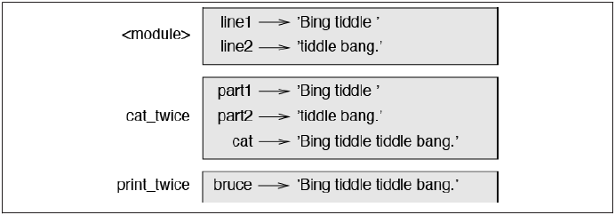

Functions
Function Calls
In the context of programming, a function is a named sequence of statements that performs a computation. When you define a function, you specify the name and the sequence of statements. Later, you can “call” the function by name. We have already seen one example of a function call:
>>> type(32) <type 'int'>
The name of the function is type. The expression in parentheses is called the argument
of the function. The result, for this function, is the type of the argument.
It is common to say that a function “takes” an argument and “returns” a result. The result
is called the return value.
Type Conversion Functions
Python provides built-in functions that convert values from one type to another. The int function takes any value and converts it to an integer, if it can, or complains otherwise:
>>> int('32') 32 >>> int('Hello') ValueError: invalid literal for int(): Hello
int can convert floating-point values to integers, but it doesn’t round off; it chops off the fraction part:
>>> int(3.99999) 3 >>> int(-2.3) -2
float converts integers and strings to floating-point numbers:
>>> float(32) 32.0 >>> float('3.14159') 3.14159
Finally, str converts its argument to a string:
>>> str(32) '32' >>> str(3.14159) '3.14159'
Adding New Functions
So far, we have only been using the functions that come with Python, but it is also possible
to add new functions. A function definition specifies the name of a new function and
the sequence of statements that execute when the function is called.
Here is an example:
def print_lyrics(): print "I'm a lumberjack, and I'm okay." print "I sleep all night and I work all day."
def is a keyword that indicates that this is a function definition. The name of the function
is print_lyrics. The rules for function names are the same as for variable names: letters,
numbers and some punctuation marks are legal, but the first character can’t be a number.
You can’t use a keyword as the name of a function, and you should avoid having a variable
and a function with the same name.
The empty parentheses after the name indicate that this function doesn’t take any
arguments.
The first line of the function definition is called the header; the rest is called the body.
The header has to end with a colon and the body has to be indented. By convention, the
indentation is always four spaces; see “Debugging” (page 33). The body can contain any
number of statements.
The strings in the print statements are enclosed in double quotes. Single quotes and
double quotes do the same thing; most people use single quotes except in cases like this
where a single quote (which is also an apostrophe) appears in the string.
If you type a function definition in interactive mode, the interpreter prints ellipses (...)
to let you know that the definition isn’t complete:
def print_lyrics(): print "I'm a lumberjack, and I'm okay." print "I sleep all night and I work all day."
To end the function, you have to enter an empty line (this is not necessary in a script). Defining a function creates a variable with the same name.
>>> print print_lyrics <function print_lyrics at 0xb7e99e9c> >>> type(print_lyrics) <type 'function'>
The value of print_lyrics is a function object, which has type 'function'. The syntax for calling the new function is the same as for built-in functions:
>>> print_lyrics() I'm a lumberjack, and I'm okay. I sleep all night and I work all day.
Once you have defined a function, you can use it inside another function. For example, to repeat the previous refrain, we could write a function called repeat_lyrics:
def repeat_lyrics(): print_lyrics() print_lyrics()
And then call repeat_lyrics:
>>> repeat_lyrics() I'm a lumberjack, and I'm okay. I sleep all night and I work all day. I'm a lumberjack, and I'm okay. I sleep all night and I work all day.
But that’s not really how the song goes.
Definitions and Uses
Pulling together the code fragments from the previous section, the whole program looks like this:
def print_lyrics(): print "I'm a lumberjack, and I'm okay." print "I sleep all night and I work all day." def repeat_lyrics(): print_lyrics() print_lyrics() repeat_lyrics()
This program contains two function definitions: print_lyrics and repeat_lyrics.
Function definitions get executed just like other statements, but the result creates func
tion objects. The statements inside the function do not get executed until the function
is called, and the function definition generates no output.
As you might expect, you have to create a function before you can execute it. In other
words, the function definition has to be executed before the function is called the first
time.
Flow of Execution
In order to ensure that a function is defined before its first use, you have to know the
order in which statements are executed, which is called the flow of execution.
Execution always begins at the first statement of the program. Statements are executed
one at a time, in order, from top to bottom.
Function definitions do not alter the flow of execution of the program, but remember
that statements inside the function are not executed until the function is called.
A function call is like a detour in the flow of execution. Instead of going to the next
statement, the flow jumps to the body of the function, executes all the statements there,
and then comes back to pick up where it left off.
That sounds simple enough, until you remember that one function can call another.
While in the middle of one function, the program might have to execute the statements
in another function. But while executing that new function, the program might have to
execute yet another function!
Fortunately, Python is good at keeping track of where it is, so each time a function
completes, the program picks up where it left off in the function that called it. When it
gets to the end of the program, it terminates.
What’s the moral of this sordid tale? When you read a program, you don’t always want
to read from top to bottom. Sometimes it makes more sense if you follow the flow of
execution.
Parameters and Arguments
Some of the built-in functions we have seen require arguments. For example, when you
call math.sin you pass a number as an argument. Some functions take more than one
argument: math.pow takes two, the base and the exponent.
Inside the function, the arguments are assigned to variables called parameters. Here is
an example of a user-defined function that takes an argument:
def print_twice(bruce): print bruce print bruce
This function assigns the argument to a parameter named bruce. When the function is
called, it prints the value of the parameter (whatever it is) twice.
This function works with any value that can be printed.
>>> print_twice('Spam') Spam Spam >>> print_twice(17) 17 17 >>> print_twice(math.pi) 3.14159265359 3.14159265359
The same rules of composition that apply to built-in functions also apply to user-defined
functions, so we can use any kind of expression as an argument for print_twice:
>>> print_twice('Spam '*4) Spam Spam Spam Spam Spam Spam Spam Spam >>> print_twice(math.cos(math.pi)) -1.0 -1.0
The argument is evaluated before the function is called, so in the examples the expres
sions 'Spam '*4 and math.cos(math.pi) are only evaluated once.
You can also use a variable as an argument:
>>> michael = 'Eric, the half a bee.' >>> print_twice(michael) Eric, the half a bee. Eric, the half a bee.
The name of the variable we pass as an argument (michael) has nothing to do with the name of the parameter (bruce). It doesn’t matter what the value was called back home (in the caller); here in print_twice, we call everybody bruce.
Variables and Parameters Are Local
When you create a variable inside a function, it is local, which means that it only exists inside the function. For example:
def cat_twice(part1, part2): cat = part1 + part2 print_twice(cat)
This function takes two arguments, concatenates them, and prints the result twice. Here is an example that uses it:
>>> line1 = 'Bing tiddle ' >>> line2 = 'tiddle bang.' >>> cat_twice(line1, line2) Bing tiddle tiddle bang. Bing tiddle tiddle bang.
When cat_twice terminates, the variable cat is destroyed. If we try to print it, we get an exception:
>>> print cat NameError: name 'cat' is not defined
Parameters are also local. For example, outside print_twice, there is no such thing as bruce.
Stack Diagrams
To keep track of which variables can be used where, it is sometimes useful to draw a
stack diagram. Like state diagrams, stack diagrams show the value of each variable, but
they also show the function each variable belongs to.
Each function is represented by a frame. A frame is a box with the name of a function
beside it and the parameters and variables of the function inside it. The stack diagram
for the previous example is shown in Figure 3-1.

The frames are arranged in a stack that indicates which function called which, and so
on. In this example, print_twice was called by cat_twice, and cat_twice was called
by \__main\__, which is a special name for the topmost frame. When you create a variable
outside of any function, it belongs to \__main\__.
Each parameter refers to the same value as its corresponding argument. So, part1 has
the same value as line1, part2 has the same value as line2, and bruce has the same
value as cat.
If an error occurs during a function call, Python prints the name of the function, and
the name of the function that called it, and the name of the function that called that, all
the way back to \__main__\.
For example, if you try to access cat from within print_twice, you get a NameError:
Traceback (innermost last): File "test.py", line 13, in __main__ cat_twice(line1, line2) File "test.py", line 5, in cat_twice print_twice(cat) File "test.py", line 9, in print_twice print cat NameError: name 'cat' is not defined
This list of functions is called a traceback. It tells you what program file the error oc curred in, and what line, and what functions were executing at the time. It also shows the line of code that caused the error. The order of the functions in the traceback is the same as the order of the frames in the stack diagram. The function that is currently running is listed at the bottom.
Fruitful Functions and Void Functions
Some of the functions we are using, such as the math functions, yield results; for lack of a better name, I call them fruitful functions. Other functions, like print_twice, per form an action but don’t return a value. They are called void functions. When you call a fruitful function, you almost always want to do something with the result; for example, you might assign it to a variable or use it as part of an expression:
x = math.cos(radians) golden = (math.sqrt(5) + 1) / 2
When you call a function in interactive mode, Python displays the result:
>>> math.sqrt(5) 2.2360679774997898
But in a script, if you call a fruitful function all by itself, the return value is lost forever!
math.sqrt(5)
This script computes the square root of 5, but since it doesn’t store or display the result, it is not very useful. Void functions might display something on the screen or have some other effect, but they don’t have a return value. If you try to assign the result to a variable, you get a special value called None.
>>> result = print_twice('Bing') Bing Bing >>> print result None
The value None is not the same as the string 'None'. It is a special value that has its own type:
>>> print type(None) <type 'NoneType'>
The functions we have written so far are all void. We will start writing fruitful functions in a few chapters.
Why Functions?
It may not be clear why it is worth the trouble to divide a program into functions. There
are several reasons:
- Creating a new function gives you an opportunity to name a group of statements,
which makes your program easier to read and debug.
- Functions can make a program smaller by eliminating repetitive code. Later, if you
make a change, you only have to make it in one place.
- Dividing a long program into functions allows you to debug the parts one at a time
and then assemble them into a working whole.
- Well-designed functions are often useful for many programs. Once you write and
debug one, you can reuse it.
Source:
Think Python by Allen B. Downey - 2012
Functions by by Mark Lutz (Learning Python, Fourth Edition)
Function Basics
In Part III, we looked at basic procedural statements in Python. Here, we’ll move on to
explore a set of additional statements that we can use to create functions of our own.
In simple terms, a function is a device that groups a set of statements so they can be run
more than once in a program. Functions also can compute a result value and let us
specify parameters that serve as function inputs, which may differ each time the code
is run. Coding an operation as a function makes it a generally useful tool, which we
can use in a variety of contexts.
More fundamentally, functions are the alternative to programming by cutting and
pasting—rather than having multiple redundant copies of an operation’s code, we can
factor it into a single function. In so doing, we reduce our future work radically: if the
operation must be changed later, we only have one copy to update, not many.
Functions are the most basic program structure Python provides for maximizing code
reuse and minimizing code redundancy. As we’ll see, functions are also a design tool
that lets us split complex systems into manageable parts. Table 16-1 summarizes the
primary function-related tools we’ll study in this part of the book.
Statement | Examples |
------|------| Calls | myfunc('spam', 'eggs', meat=ham)| def, return| def adder(a, b=1, c): return a + b + c[0]| global| def changer():global x; x = 'new' | nonlocal| def changer():nonlocal x; x = 'new'| yield| def squares(x):for i in range(x): yield i 2 | lambda| funcs = [lambda x: x2, lambda x: x3]
Why Use Functions?
Before we get into the details, let’s establish a clear picture of what functions are all about. Functions are a nearly universal program-structuring device. You may have come across them before in other languages, where they may have been called subroutines or procedures. As a brief introduction, functions serve two primary development roles:
Maximizing code reuse and minimizing redundancy As in most programming languages, Python functions are the simplest way to package logic you may wish to use in more than one place and more than one time. Up until now, all the code we’ve been writing has run immediately. Functions allow us to group and generalize code to be used arbitrarily many times later. Because they allow us to code an operation in a single place and use it in many places, Python functions are the most basic factoring tool in the language: they allow us to reduce code redundancy in our programs, and thereby reduce maintenance effort.
Procedural decomposition Functions also provide a tool for splitting systems into pieces that have well-defined roles. For instance, to make a pizza from scratch, you would start by mixing the dough, rolling it out, adding toppings, baking it, and so on. If you were programming a pizza-making robot, functions would help you divide the overall “make pizza” task into chunks—one function for each subtask in the process. It’s easier to implement the smaller tasks in isolation than it is to implement the entire process at once. In general, functions are about procedure—how to do something, rather than what you’re doing it to. We’ll see why this distinction matters in Part VI, when we start making new object with classes.
In this part of the book, we’ll explore the tools used to code functions in Python: function basics, scope rules, and argument passing, along with a few related concepts such as generators and functional tools. Because its importance begins to become more apparent at this level of coding, we’ll also revisit the notion of polymorphism introduced earlier in the book. As you’ll see, functions don’t imply much new syntax, but they do lead us to some bigger programming ideas.
Coding Functions
Although it wasn’t made very formal, we’ve already used some functions in earlier
chapters. For instance, to make a file object, we called the built-in open function; similarly,
we used the len built-in function to ask for the number of items in a collection
object.
In this chapter, we will explore how to write new functions in Python. Functions we
write behave the same way as the built-ins we’ve already seen: they are called in expressions, are passed values, and return results. But writing new functions requires
the application of a few additional ideas that haven’t yet been introduced. Moreover,
functions behave very differently in Python than they do in compiled languages like C.
Here is a brief introduction to the main concepts behind Python functions, all of which
we will study in this part of the book:
def is executable code.Python functions are written with a new statement, the def. Unlike functions in compiled languages such as C, def is an executable statement— your function does not exist until Python reaches and runs the def. In fact, it’s legal (and even occasionally useful) to nest def statements inside if statements, while loops, and even other defs. In typical operation, def statements are coded in module files and are naturally run to generate functions when a module file is first imported.-
def creates an object and assigns it to a name.When Python reaches and runs a def statement, it generates a new function object and assigns it to the function’s name. As with all assignments, the function name becomes a reference to the function object. There’s nothing magic about the name of a function—as you’ll see, the function object can be assigned to other names, stored in a list, and so on. Function objects may also have arbitrary user-defined attributes attached to them to record data. -
lambda creates an object but returns it as a result.Functions may also be created with the lambda expression, a feature that allows us to in-line function definitions in places where a def statement won’t work syntactically -
return sends a result object back to the caller.When a function is called, the caller stops until the function finishes its work and returns control to the caller. Functions that compute a value send it back to the caller with a return statement; the returned value becomes the result of the function call. -
yield sends a result object back to the caller, but remembers where it left off.Functions known as generators may also use the yield statement to send back a value and suspend their state such that they may be resumed later, to produce a series of results over time. This is another advanced topic covered later in this part of the book. -
global declares module-level variables that are to be assigned.By default, all names assigned in a function are local to that function and exist only while the function runs. To assign a name in the enclosing module, functions need to list it in a global statement. More generally, names are always looked up in scopes— places where variables are stored—and assignments bind names to scopes. -
nonlocal declares enclosing function variables that are to be assigned.Similarly, the nonlocal statement added in Python 3.0 allows a function to assign a name that exists in the scope of a syntactically enclosing def statement. This allows enclosing functions to serve as a place to retain state—information remembered when a function is called—without using shared global names. -
Arguments are passed by assignment (object reference).In Python, arguments are passed to functions by assignment (which, as we’ve learned, means by object reference). As you’ll see, in Python’s model the caller and function share objects by references, but there is no name aliasing. Changing an argument name within a function does not also change the corresponding name in the caller, but changing passed-in mutable objects can change objects shared by the caller. -
Arguments, return values, and variables are not declared.As with everything in Python, there are no type constraints on functions. In fact, nothing about a function needs to be declared ahead of time: you can pass in arguments of any type, return any kind of object, and so on. As one consequence, a single function can often be applied to a variety of object types—any objects that sport a compatible interface (methods and expressions) will do, regardless of their specific types.
If some of the preceding words didn’t sink in, don’t worry—we’ll explore all of these concepts with real code in this part of the book. Let’s get started by expanding on some of these ideas and looking at a few examples.
def Statements
The def statement creates a function object and assigns it to a name. Its general format is as follows:
def <name>(arg1, arg2,... argN): <statements>
As with all compound Python statements, def consists of a header line followed by a
block of statements, usually indented (or a simple statement after the colon). The
statement block becomes the function’s body—that is, the code Python executes each
time the function is called.
The def header line specifies a function name that is assigned the function object, along
with a list of zero or more arguments (sometimes called parameters) in parentheses.
The argument names in the header are assigned to the objects passed in parentheses at
the point of call.
Function bodies often contain a return statement:
def <name>(arg1, arg2,... argN): ... return <value>
The Python return statement can show up anywhere in a function body; it ends the function call and sends a result back to the caller. The return statement consists of an object expression that gives the function’s result. The return statement is optional; if it’s not present, the function exits when the control flow falls off the end of the function body. Technically, a function without a return statement returns the None object automatically, but this return value is usually ignored.
def Executes at Runtime
The Python def is a true executable statement: when it runs, it creates a new function object and assigns it to a name. (Remember, all we have in Python is runtime; there is no such thing as a separate compile time.) Because it’s a statement, a def can appear anywhere a statement can—even nested in other statements. For instance, although defs normally are run when the module enclosing them is imported, it’s also completely legal to nest a function def inside an if statement to select between alternative definitions:
if test: def func(): # Define func this way ... else: def func(): # Or else this way ... ... func() # Call the version selected and built
One way to understand this code is to realize that the def is much like an = statement: it simply assigns a name at runtime. Unlike in compiled languages such as C, Python functions do not need to be fully defined before the program runs. More generally, defs are not evaluated until they are reached and run, and the code inside defs is not evaluated until the functions are later called. Because function definition happens at runtime, there’s nothing special about the function name. What’s important is the object to which it refers:
othername = func # Assign function object othername() # Call func again
Here, the function was assigned to a different name and called through the new name. Like everything else in Python, functions are just objects; they are recorded explicitly in memory at program execution time. In fact, besides calls, functions allow arbitrary attributes to be attached to record information for later use:
def func(): ... # Create function object func() # Call object func.attr = value # Attach attributes
A First Example: Definitions and Calls
Apart from such runtime concepts (which tend to seem most unique to programmers with backgrounds in traditional compiled languages), Python functions are straightforward to use. Let’s code a first real example to demonstrate the basics. As you’ll see, there are two sides to the function picture: a definition (the def that creates a function) and a call (an expression that tells Python to run the function’s body).
Definition
Here’s a definition typed interactively that defines a function called times, which returns the product of its two arguments:
>>> def times(x, y): # Create and assign function ... return x * y # Body executed when called ...
When Python reaches and runs this def, it creates a new function object that packages the function’s code and assigns the object to the name times. Typically, such a statement is coded in a module file and runs when the enclosing file is imported; for something this small, though, the interactive prompt suffices.
Calls
After the def has run, you can call (run) the function in your program by adding parentheses after the function’s name. The parentheses may optionally contain one or more object arguments, to be passed (assigned) to the names in the function’s header:
>>> times(2, 4) # Arguments in parentheses 8
This expression passes two arguments to times. As mentioned previously, arguments are passed by assignment, so in this case the name x in the function header is assigned the value 2, y is assigned the value 4, and the function’s body is run. For this function, the body is just a return statement that sends back the result as the value of the call expression. The returned object was printed here interactively (as in most languages, 2 * 4 is 8 in Python), but if we needed to use it later we could instead assign it to a variable. For example:
>>> x = times(3.14, 4) # Save the result object >>> x 12.56
Now, watch what happens when the function is called a third time, with very different kinds of objects passed in:
>>> times('Ni', 4) # Functions are "typeless" 'NiNiNiNi'
This time, our function means something completely different (Monty Python reference
again intended). In this third call, a string and an integer are passed to x and y, instead
of two numbers. Recall that * works on both numbers and sequences; because we never
declare the types of variables, arguments, or return values in Python, we can use
times to either multiply numbers or repeat sequences.
In other words, what our times function means and does depends on what we pass into
it. This is a core idea in Python (and perhaps the key to using the language well), which
we’ll explore in the next section.
Source:
Learning Python, Fourth Edition by Mark Lutz - 2009
How To Define Functions in Python 3
A function is a block of instructions that performs an action and, once defined, can be reused. Functions make code more modular, allowing you to use the same code over and over again.
Python has a number of built-in functions that you may be familiar with, including:
- print() which will print an object to the terminal
- int() which will convert a string or number data type to an integer data type
- len() which returns the length of an object
Function names include parentheses and may include parameters.
In this tutorial, we’ll go over how to define your own functions to use in your coding projects.
Defining a Function
Let’s start with turning the classic “Hello, World!” program into a function.
We’ll create a new text file in our text editor of choice, and call the program hello.py. Then, we’ll define the function.
A function is defined by using the def keyword, followed by a name of your choosing, followed by a set of parentheses which hold any parameters the function will take (they can be empty), and ending with a colon.
In this case, we’ll define a function named hello():
def hello():
This sets up the initial statement for creating a function.
From here, we’ll add a second line with a 4-space indent to provide the instructions for what the function does. In this case, we’ll be printing Hello, World! to the console:
def hello(): print("Hello, World!")
Our function is now fully defined, but if we run the program at this point, nothing will happen since we didn’t call the function.
So, outside of our defined function block, let’s call the function with hello():
def hello(): print("Hello, World!") hello()
Now, let’s run the program:
python hello.py
You should receive the following output:
Hello, World!
Functions can be more complicated than the hello() function we defined above. For example, we can use for loops, conditional statements, and more within our function block.
For example, the function defined below utilizes a conditional statement to check if the input for the name variable contains a vowel, then uses a for loop to iterate over the letters in the name string.
# Define function names() def names(): # Set up name variable with input name = str(input('Enter your name: ')) # Check whether name has a vowel if set('aeiou').intersection(name.lower()): print('Your name contains a vowel.') else: print('Your name does not contain a vowel.') # Iterate over name for letter in name: print(letter) # Call the function names()
The names() function we defined above sets up a conditional statement and a for loop, showing how code can be organized within a function definition. However, depending on what we intend with our program and how we want to set up our code, we may want to define the conditional statement and the for loop as two separate functions.
Defining functions within a program makes our code modular and reusable so that we can call the same functions without rewriting them.
Working with Parameters
So far we have looked at functions with empty parentheses that do not take arguments, but we can define parameters in function definitions within their parentheses.
A parameter is a named entity in a function definition, specifying an argument that the function can accept.
Let’s create a small program that takes in parameters x, y, and z. We’ll create a function that adds the parameters together in different configurations. The sums of these will be printed by the function. Then we’ll call the function and pass numbers into the function.
def add_numbers(x, y, z): a = x + y b = x + z c = y + z print(a, b, c) add_numbers(1, 2, 3)
We passed the number 1 in for the x parameter, 2 in for the y parameter, and 3 in for the z parameter. These values correspond with each parameter in the order they are given.
The program is essentially doing the following math based on the values we passed to the parameters:
a = 1 + 2 b = 1 + 3 c = 2 + 3
The function also prints a, b, and c, and based on the math above we would expect a to be equal to 3, b to be 4, and c to be 5. Let’s run the program:
python add_numbers.py Output : 3 4 5
When we pass 1, 2, and 3 as parameters to the add_numbers() function, we receive the expected output.
Parameters are arguments that are typically defined as variables within function definitions. They can be assigned values when you run the method, passing the arguments into the function.
Keyword Arguments
In addition to calling parameters in order, you can use keyword arguments in a function call, in which the caller identifies the arguments by the parameter name.
When you use keyword arguments, you can use parameters out of order because the Python interpreter will use the keywords provided to match the values to the parameters.
Let’s create a function that will show us profile information for a user. We’ll pass parameters to it in the form of username (intended as a string), and followers (intended as an integer).
# Define function with parameters def profile_info(username, followers): print("Username: " + username) print("Followers: " + str(followers))
Within the function definition statement, username and followers are contained in the parentheses of the profile_info() function. The block of the function prints out information about the user as strings, making use of the two parameters.
Now, we can call the function and assign parameters to it:
def profile_info(username, followers): print("Username: " + username) print("Followers: " + str(followers)) # Call function with parameters assigned as above profile_info("sammyshark", 945) # Call function with keyword arguments profile_info(username="AlexAnglerfish", followers=342)
In the first function call, we have filled in the information with a username of sammyshark and followers being 945, in the second function call we used keyword arguments, assigning values to the argument variables.
Let’s run the program:
python profile.py Output : Username: sammyshark Followers: 945 Username: AlexAnglerfish Followers: 342
The output shows us the usernames and numbers of followers for both users.
This also permits us to modify the order of the parameters, as in this example of the same program with a different call:
def profile_info(username, followers): print("Username: " + username) print("Followers: " + str(followers)) # Change order of parameters profile_info(followers=820, username="cameron-catfish")
When we run the program again with the python profile.py command, we’ll receive the following output:
Output: Username: cameron-catfish Followers: 820
Because the function definition maintains the same order of print() statements, if we use keyword arguments, it does not matter which order we pass them into the function call.
Default Argument Values
We can also provide default values for one or both of the parameters. Let’s create a default value for the followers parameter with a value of 1:
def profile_info(username, followers=1): print("Username: " + username) print("Followers: " + str(followers))
Now, we can run the function with only the username function assigned, and the number of followers will automatically default to 1. We can also still change the number of followers if we would like.
def profile_info(username, followers=1): print("Username: " + username) print("Followers: " + str(followers)) profile_info(username="JOctopus") profile_info(username="sammyshark", followers=945)
When we run the program with the python profile.py command, we’ll receive the following output:
Output: Username: JOctopus Followers: 1 Username: sammyshark Followers: 945
Providing default parameters with values can let us skip defining values for each argument that already has a default.
Returning a Value
You can pass a parameter value into a function, and a function can also produce a value.
A function can produce a value with the return statement, which will exit a function and optionally pass an expression back to the caller. If you use a return statement with no arguments, the function will return None.
So far, we have used the print() statement instead of the return statement in our functions. Let’s create a program that instead of printing will return a variable.
In a new text file called square.py, we’ll create a program that squares the parameter x and returns the variable y. We issue a call to print the result variable, which is formed by running the square() function with 3 passed into it.
def square(x): y = x ** 2 return y result = square(3) print(result)
We can run the program and see the output:
python square.py Output: 9
The integer 9 is returned as output, which is what we would expect by asking Python to find the square of 3.
To further understand how the return statement works, we can comment out the return statement in the program:
def square(x): y = x ** 2 # return y result = square(3) print(result)
Now, let’s run the program again:
python square.py Output: None
Without using the return statement here, the program cannot return a value so the value defaults to None.
As another example, in the add_numbers.py program above, we could swap out the print() statement for a return statement.
def add_numbers(x, y, z): a = x + y b = x + z c = y + z return a, b, c sums = add_numbers(1, 2, 3) print(sums)
Outside of the function, we set the variable sums equal to the result of the function taking in 1, 2, and 3 as we did above. Then we called a print of the sums variable.
Let’s run the program again now that it has the return statement:
Output: (3, 4, 5)
We receive the same numbers 3, 4, and 5 as output that we received previously by using the print() statement in the function. This time it is delivered as a tuple because the return statement’s expression list has at least one comma.
Functions exit immediately when they hit a return statement, whether or not they’re returning a value.
def loop_five(): for x in range(0, 25): print(x) if x == 5: # Stop function at x == 5 return print("This line will not execute.") loop_five()
Using the return statement within the for loop ends the function, so the line that is outside of the loop will not run. If, instead, we had used a break statement, only the loop would have exited at that time, and the last print() line would run.
The return statement exits a function, and may return a value when issued with a parameter.
Using main() as a Function
Although in Python you can call the function at the bottom of your program and it will run (as we have done in the examples above), many programming languages (like C++ and Java) require a main function in order to execute. Including a main() function, though not required, can structure our Python programs in a logical way that puts the most important components of the program into one function. It can also make our programs easier for non-Python programmers to read.
We’ll start with adding a main() function to the hello.py program above. We’ll keep our hello() function, and then define a main() function:
def hello(): print("Hello, World!") def main():
Within the main() function, let’s include a print() statement to let us know that we’re in the main() function. Additionally, let’s call the hello() function within the main() function:
def hello(): print("Hello, World!") def main(): print("This is the main function") hello()
Finally, at the bottom of the program we’ll call the main() function:
def hello(): print("Hello, World!") def main(): print("This is the main function.") hello() main()
At this point, we can run our program:
python hello.py Output: This is the main function. Hello, World!
Because we called the hello() function within main() and then only called main() to run, the Hello, World! text printed only once, after the string that told us we were in the main function.
Next we’re going to be working with multiple functions, so it is worth reviewing the variable scope of global and local variables. If you define a variable within a function block, you’ll only be able to use that variable within that function. If you would like to use variables across functions it may be better to declare a global variable.
In Python, '_main_' is the name of the scope where top-level code will execute. When a program is run from standard input, a script, or from an interactive prompt, its _name_ is set equal to '_main_'.
Because of this, there is a convention to use the following construction:
if __name__ == '__main__': # Code to run when this is the main program here
This lets program files be used either: - as the main program and run what follows the if statement - as a module and not run what follows the if statement.
Any code that is not contained within this statement will be executed upon running. If you’re using your program file as a module, the code that is not in this statement will also execute upon its import while running the secondary file.
Let’s expand on our names.py program above, and create a new file called more_names.py. In this program we’ll declare a global variable and modify our original names() function so that the instructions are in two discrete functions.
The first function, has_vowel() will check to see if the name string contains a vowel.
The second function print_letters() will print each letter of the name string.
# Declare global variable name for use in all functions name = str(input('Enter your name: ')) # Define function to check if name contains a vowel def has_vowel(): if set('aeiou').intersection(name.lower()): print('Your name contains a vowel.') else: print('Your name does not contain a vowel.') # Iterate over letters in name string def print_letters(): for letter in name: print(letter)
With this set up, let’s define the main() function which will contain a call to both the has_vowel() and the print_letters() functions.
# Declare global variable name for use in all functions name = str(input('Enter your name: ')) # Define function to check if name contains a vowel def has_vowel(): if set('aeiou').intersection(name.lower()): print('Your name contains a vowel.') else: print('Your name does not contain a vowel.') # Iterate over letters in name string def print_letters(): for letter in name: print(letter) # Define main method that calls other functions def main(): has_vowel() print_letters()
Finally, we’ll add the if \__name\__ == '\__main\__': construction at the bottom of the file. For our purposes, since we have put all the functions we would like to do in the main() function, we’ll call the main() function following this if statement.
# Declare global variable name for use in all functions name = str(input('Enter your name: ')) # Define function to check if name contains a vowel def has_vowel(): if set('aeiou').intersection(name.lower()): print('Your name contains a vowel.') else: print('Your name does not contain a vowel.') # Iterate over letters in name string def print_letters(): for letter in name: print(letter) # Define main method that calls other functions def main(): has_vowel() print_letters() # Execute main() function if __name__ == '__main__': main()
We can now run the program:
python more_names.py
The program will show the same output as the names.py program, but here the code is more organized and can be used in a modular way without modification.
If you did not want to declare a main() function, you alternatively could have ended the program like this:
if __name__ == '__main__': has_vowel() print_letters()
Using main() as a function and the if _name_ == '_main_': statement can organize your code in a logical way, making it more readable and modular.
Conclusion
Functions are code blocks of instructions that perform actions within a program, helping to make our code reusable and modular.
To learn more about how to make your code more modular, you can read our guide on How To Write Modules in Python 3.
Source:
https://stackoverflow.com/questions/1909512/what-is-python-used-for
Prefer Exceptions to Returning None
When writing utility functions, there’s a draw for Python programmers to give special meaning to the return value of None. It seems to makes sense in some cases. For example, say you want a helper function that divides one number by another. In the case of dividing by zero, returning None seems natural because the result is undefined.
def divide(a, b): try: return a / b except ZeroDivisionError: return None
Code using this function can interpret the return value accordingly.
result = divide(x, y) if result is None: print(‘Invalid inputs’)
What happens when the numerator is zero? That will cause the return value to also be zero (if the denominator is non-zero). This can cause problems when you evaluate the result in a condition like an if statement. You may accidentally look for any False equivalent value to indicate errors instead of only looking for None.
x, y = 0, 5 result = divide(x, y) if not result: print(‘Invalid inputs’) # This is wrong!
This is a common mistake in Python code when None has special meaning. This is why returning None from a function is error prone. There are two ways to reduce the chance of such errors.
The first way is to split the return value into a two-tuple. The first part of the tuple indicates that the operation was a success or failure. The second part is the actual result that was computed.
def divide(a, b): try: return True, a / b except ZeroDivisionError: return False, None
Callers of this function have to unpack the tuple. That forces them to consider the status part of the tuple instead of just looking at the result of division.
success, result = divide(x, y) if not success: print(‘Invalid inputs’)
The problem is that callers can easily ignore the first part of the tuple (using the underscore variable name, a Python convention for unused variables). The resulting code doesn’t look wrong at first glance. This is as bad as just returning None.
_, result = divide(x, y) if not result: print(‘Invalid inputs’)
The second, better way to reduce these errors is to never return None at all. Instead, raise an exception up to the caller and make them deal with it. Here, I turn a ZeroDivisionError into a ValueError to indicate to the caller that the input values are bad:
def divide(a, b): try: return a / b except ZeroDivisionError as e: raise ValueError(‘Invalid inputs’) from e
Now the caller should handle the exception for the invalid input case. The caller no longer requires a condition on the return value of the function. If the function didn’t raise an exception, then the return value must be good. The outcome of exception handling is clear.
x, y = 5, 2 try: result = divide(x, y) except ValueError: print(‘Invalid inputs’) else: print(‘Result is %.1f’ % result) >>> Result is 2.5
Things to Remember
- Functions that return None to indicate special meaning are error prone because None and other values (e.g., zero, the empty string) all evaluate to False in conditional expressions.
- Raise exceptions to indicate special situations instead of returning None. Expect the calling code to handle exceptions properly when they’re documented.
Source:
Effective Python by Brett Slatkin